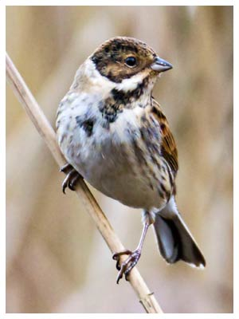

Reed Bunting
Usually seen by the reed beds in the winter months; this species was a resident that bred. Not so commonly seen in recent years.
17/03/95 - Pair 1996 - Pair in breeding season 31/10/97 - 2 birds 1998 - Not recorded this year 31/01/99 - Single male seen at the duck feeding station 21/02/99 - 6 birds ??/04/99 - Singing male 16/12/99 - 4 birds 27/01/00 - 8 birds 06/04/00 - One pair 13/05/00 - Single male 21/01/01 - 2 birds 26/12/01 - 1 female 07/03/02 - 5 birds also 2 males on 12/03 and a single on 26/03 04/05/02 - heard |
 Kevin Harris: 9th December 2015 |
06/02/03 - 2 birds
23/02/03 - 3 birds
16/11/03 - 1 heard
18/01/04 - 5 birds
06/02/04 - 2 birds
13/03/04 - 3 birds
03/04/04 - Heard
01/11/04 - Single bird
24/10/05 - 2 birds
09/12/05 - Heard
14/05/06 - 1 singing
09/11/06 - Single bird
27/11/06 - Heard
26/02/07 -1 male
03/03/08 - 1 bird singing. Another or the same seen 05/03/08
2009 - single female on 30/03/09 with up to 2 birds present on several dates in December
2010 - recorded on 15 occasions with 4 on 14/01 and 6 on 26/12, the highest count for 10 years
2011 - Up to 4 seen on 6 winter dates
2012 - Recorded on 27 dates with up to 4 seen up to 1st week in March then 1 pair until 1st week in April. Also a single female on 01/12
2013 - Up to 4 recorded on 19 winter and Spring dates including a male singing on 20/04
2014 - Up to 3 recorded on 9 winter dates
2015 - 1or 2 recorded on 10 dates including 6 dates in April. Not seen in May-September
2016 - 1 or 2 recorded on just 4 dates. 2 on 28/01, 1 on 30/01, 2 on 11/02 and 1 on 11/04
2017 - 4 reported on 29/08 was the only record
2018 - None reported for the first time since 1998
2019 - A second year with no reports
2020 - Probably just one male frst seen in the NE reeds on 20/04, then seen and heard singing sporadically in the SW reeds from 22/04 to 09/05
2021 -None reported
2022 - The only record was of one heard singing in the SE reeds on 10/07
2023 - 1 male on 25/01. 2 on the east feeders on 14/03. Male seen and occasional song heard through June and just into July. 1 on 03/08
2024 - A pair were present in the SE reeds in February and March with 5 birds present on 24/02. Then a male was heard singing from April, all through until August in the SE corner
2025 - Sporadic records of up to 3 individuals from 01/01 right through to 23/07. Probably a pair present throughout in the SE corner where feeders are sited. Song heard from March through to May